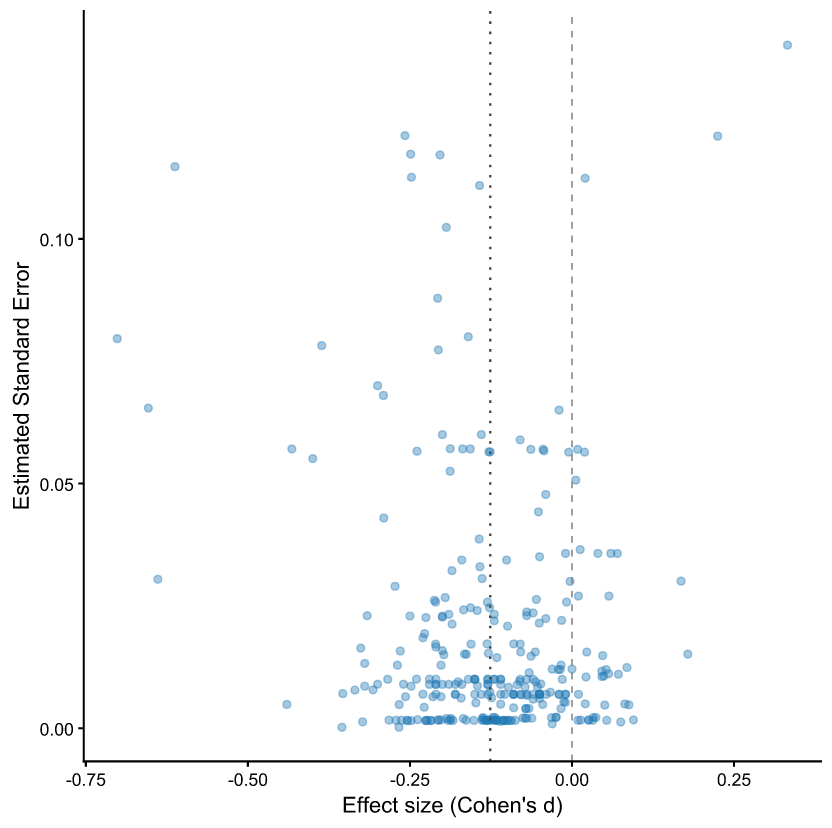

Abstract
We revisit a central estimate in the economics of education: the human-capital loss associated with COVID-19 school closures. Estimates of pandemic learning loss may be affected by publication bias, p-hacking, and the mechanical correlation between standardized effect sizes and their standard errors. We conduct a comprehensive multi-method assessment of bias by applying a wide range of correction techniques — including PET-PEESE, three-parameter selection models (3PSM), Robust Bayesian Meta-Analysis (RoBMA), Meta-Analysis Instrumental Variable Estimation (MAIVE), Right-Truncated Meta-Analysis (RTMA), and multi-bias sensitivity analysis. Our preferred specifications, RoBMA and MAIVE, rely on different assumptions yet converge on an effect size of approximately −0.12 SD, equivalent to a learning loss of about 30% of a school year. Although some methods reveal signs of publication bias and selective reporting, these findings do not explain away the central finding: the COVID-19 learning deficit is economically meaningful and statistically robust.

Funnel plot of 291 effect-size estimates of COVID-19 learning loss. Horizontal axis: effect size (Cohen's d); vertical axis: estimated standard error. The dashed line marks zero (no effect); the dotted line marks the unweighted mean of the estimates (about −0.13 SD). Most estimates are negative, indicating a learning deficit. Across a battery of bias-correction methods (PET-PEESE, 3PSM, RoBMA, MAIVE, RTMA, multi-bias), the preferred RoBMA and MAIVE specifications converge on about −0.12 SD — roughly 30% of a school year — and the deficit survives corrections for publication bias and selective reporting.
Reference: Martina Luskova, Nino Buliskeria, Ali Elminejad, Tomas Havranek, Zuzana Irsova, Stepan Jurajda, Marek Kapicka (2026), “Publication Bias and P-Hacking in the Effect of COVID-19 on Learning.” Charles University, Prague. Available at meta-analysis.cz/learning.
Headline result
Learning loss from COVID-19 school closures: the meta-analytic estimate is about -0.12 SD, roughly 30% of a school year (Luskova et al. 2026).
How to cite
Martina Luskova, Nino Buliskeria, Ali Elminejad, Tomas Havranek, Zuzana Irsova, Stepan Jurajda, Marek Kapicka (2026), “Publication Bias and P-Hacking in the Effect of COVID-19 on Learning.” Charles University, Prague. Available at meta-analysis.cz/learning.
BibTeX
@misc{luskova2026learning,
author = {Martina Luskova and Nino Buliskeria and Ali Elminejad and Tomas Havranek and Zuzana Irsova and Stepan Jurajda and Marek Kapicka},
title = {Publication Bias and P-Hacking in the Effect of COVID-19 on Learning},
year = {2026},
}